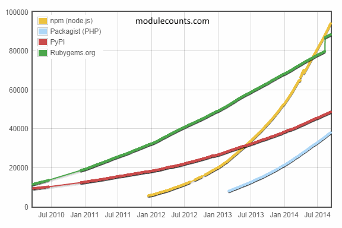

How
Speed of light is the scientific barrier to the problem.
The crazy idea was what if we modeled data as light?
We could then exploit the quantum behavior of photons.
Such algorithms always collapse to the same answer eventually, even over significant latency.
Why
Instant load times, because everything is a cache in a Named Data Network1.
Combined with graphs, the mathematical superset of SQL and NoSQL,
Developers can now run Turing Complete queries on their data.
Big Data turns into meaningful data2, in fast and affordable ways.
Now
Market interest in javascript and graphs is exploding.
At accelerated rates never seen before in the software world.


Gun is the union of these two niches.
The facts predict they are the buzzwords of the future.
Team
Here are the people powering the
"Open Source Firebase", "Dropbox for Developers", or "Bitcoin for Data".
Mark Nadal
CEO, 4 years experience in Synchronization Systems.
Consulting clientele include a Thiel Fellow,
prototyped Prudential Retirement's SuperBowl advert's online interactive,
startup UCLA alumni.
AJ ONeal
CIO, 8 years experience with Software and Database Architecture.
Contributor to NodeJS core,
in the top 1 percentile rank of all StackOverflow users,
built a Billboard Hot 100 rap artist's Twitter feed client.
You?
Gun is the first company in this space, but it is going to fill up fast.
Without any marketing, we already have
250+ developers interested.
With 1600 demo video views in less than 24 hours.
Our value proposition for developers,
slashing operational time and costs while making things faster and easier,
is convincing enough that some are likely to even leave established non-javascript databases.
By being open source, we maintain trust with developers and get their contributions back.
Together, this effectively
highgrades all the talent for us, away from new competitors.
Leaving them fighting to compete with "free".
Gun becomes the de facto,
like MySQL
and MongoDB did for their hype niche,
and profits from enterprise licenses and consulting.
An established revenue model that you, as an investor, share in. Your choice.